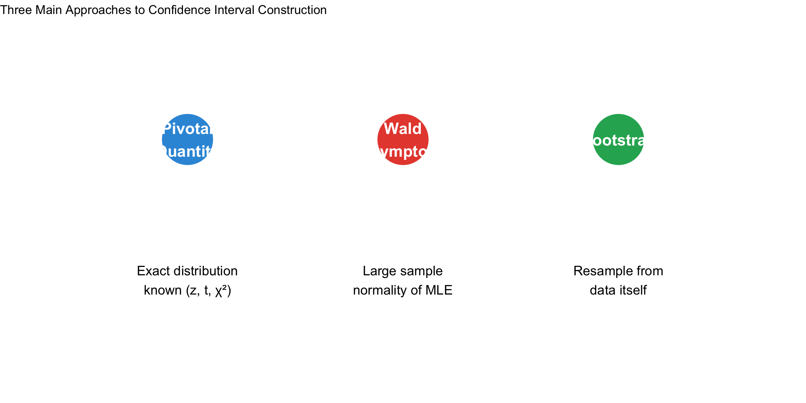
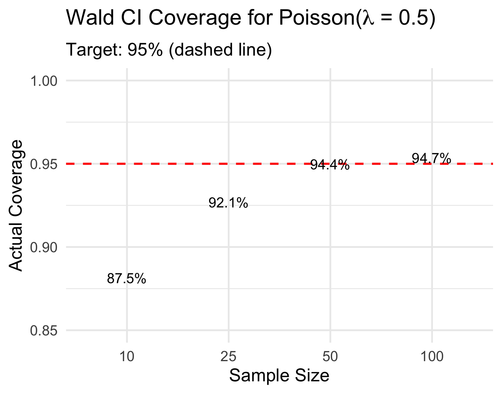
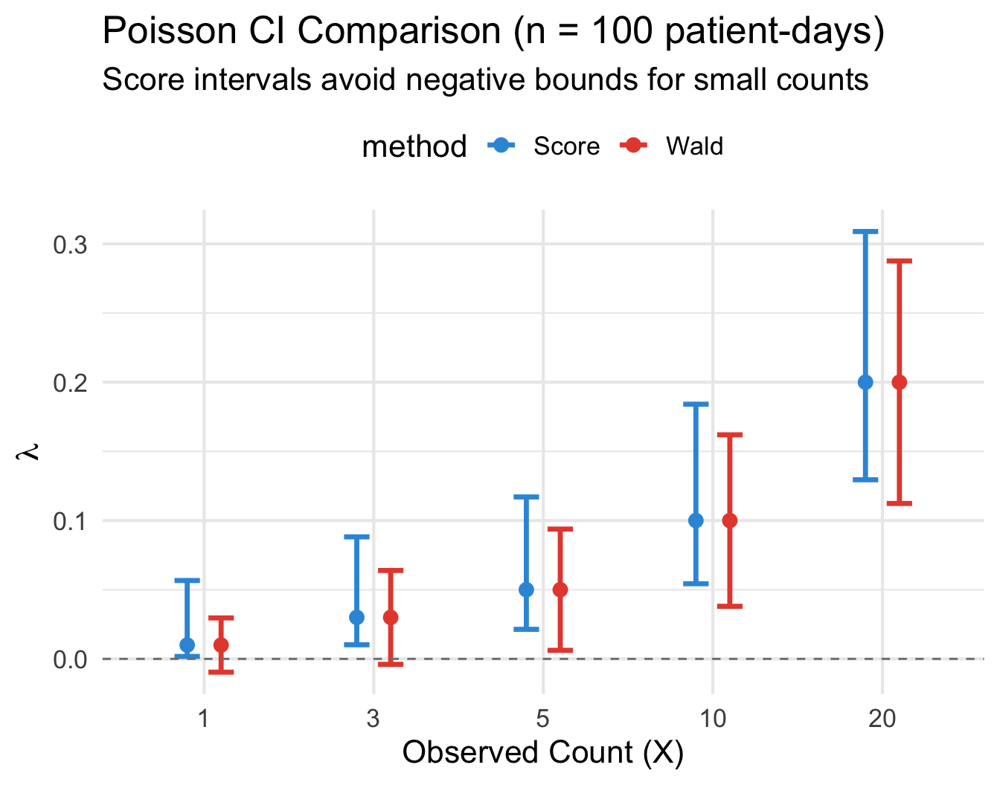
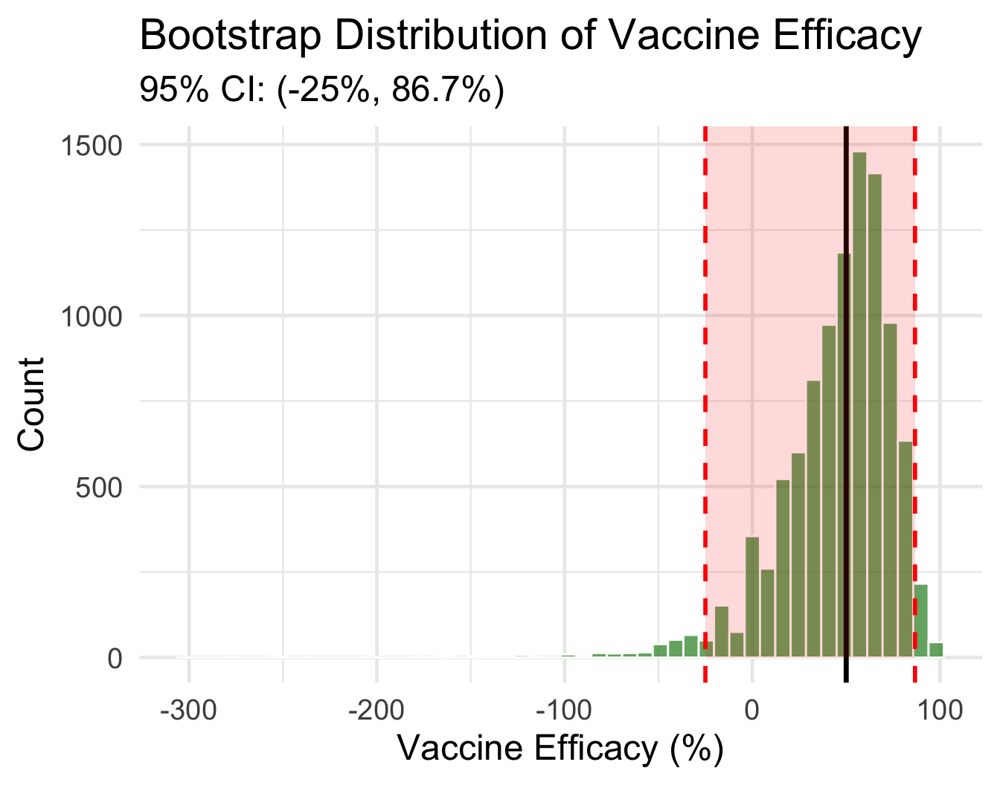
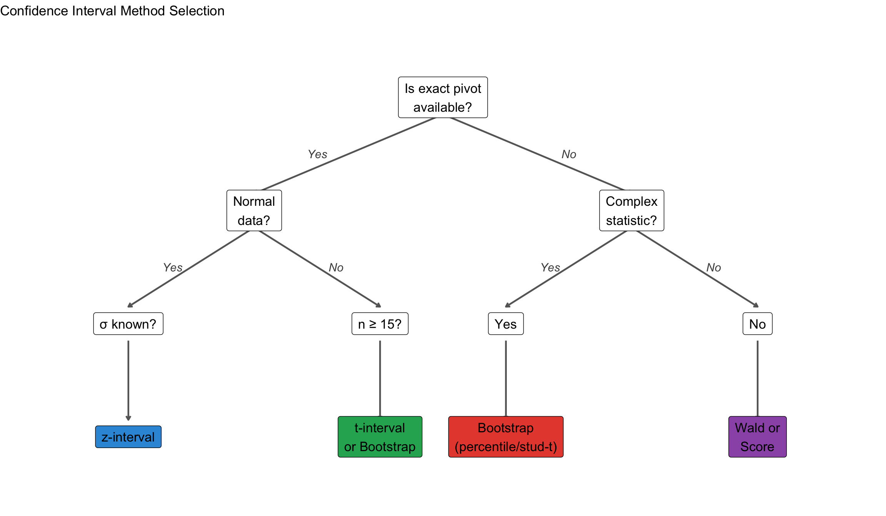

Lesson 11: Review of Confidence Intervals
BSTA 551: Statistical Inference
Lesson 11: Confidence Intervals Review
What We’ve Covered (Lessons 7-10)
- Lesson 7: CI fundamentals — interpretation, pivotal quantities, z-intervals
- Lesson 8: t-intervals (\(\sigma\) unknown), CIs for proportions (Wald, Score, Agresti-Coull)
- Lesson 9: Bootstrap principles — resampling, bootstrap distribution
- Lesson 10: Bootstrap CIs — percentile, simple t, studentized t
. . .
Today’s Goals:
- Review the three main CI construction approaches
- Extend Wald intervals to other distributions and functions of MLEs
- Learn the delta method for variance of transformed estimators
- See score intervals for non-proportion parameters
The Big Picture
Three Approaches to CI Construction
Quick Reference: CI Formulas
| Parameter | Method | Formula |
|---|---|---|
| \(\mu\) (\(\sigma\) known) | Pivotal (z) | \(\bar{x} \pm z_{\alpha/2}\frac{\sigma}{\sqrt{n}}\) |
| \(\mu\) (\(\sigma\) unknown) | Pivotal (t) | \(\bar{x} \pm t_{\alpha/2, n-1}\frac{s}{\sqrt{n}}\) |
| \(p\) (proportion) | Wald | \(\hat{p} \pm z_{\alpha/2}\sqrt{\frac{\hat{p}(1-\hat{p})}{n}}\) |
| \(p\) (proportion) | Score | Solve \(\frac{(\hat{p} - p)^2}{p(1-p)/n} = z_{\alpha/2}^2\) |
| Any \(\theta\) | Bootstrap Percentile | \((\hat{\theta}^*_{\alpha/2}, \hat{\theta}^*_{1-\alpha/2})\) |
| Any \(\theta\) | Bootstrap t | \(\hat{\theta} \pm t^*_{\alpha/2} \cdot SE_{boot}\) |
Correct CI Interpretation
TipValid Interpretations
- “We are 95% confident that the true parameter lies in (L, U)”
- “The interval (L, U) is a plausible range for the parameter”
- “In repeated sampling, 95% of such intervals contain the true parameter”
WarningInvalid Interpretations
- “There is a 95% probability that \(\theta\) is in (L, U)” ✗
- “95% of the data falls between L and U” ✗
- “The true parameter varies between L and U” ✗
Wald Intervals: General Framework
The Wald Interval Principle
ImportantAsymptotic Normality of MLEs
Under regularity conditions, the MLE \(\hat{\theta}\) is asymptotically normal: \[\hat{\theta} \stackrel{approx}{\sim} N\left(\theta, \frac{1}{I(\theta)}\right)\] where \(I(\theta)\) is the Fisher information.
. . .
The Wald CI plugs in \(\hat{\theta}\) for unknown quantities in the variance: \[\hat{\theta} \pm z_{\alpha/2} \cdot \widehat{SE}(\hat{\theta})\]
where \(\widehat{SE}(\hat{\theta}) = \sqrt{1/I(\hat{\theta})}\) or the observed information.
Wald Interval: Poisson Rate
Setting: Count data \(X_1, \ldots, X_n \stackrel{iid}{\sim} \text{Poisson}(\lambda)\)
. . .
MLE: \(\hat{\lambda} = \bar{X}\)
Fisher Information: \(I(\lambda) = n/\lambda\)
Asymptotic Variance: \(\text{Var}(\hat{\lambda}) \approx \lambda/n\)
. . .
NoteWald CI for Poisson Rate
\[\hat{\lambda} \pm z_{\alpha/2} \sqrt{\frac{\hat{\lambda}}{n}}\]
Medical Example: Hospital Infection Rate
A hospital monitors central line-associated bloodstream infections (CLABSI). Over \(n = 500\) patient-days, they observe \(X = 8\) infections.
x <- 8 # observed infections
n <- 500 # patient-days
lambda_hat <- x / n # MLE (rate per patient-day)
# Wald CI
se_wald <- sqrt(lambda_hat / n)
z <- qnorm(0.975)
wald_ci <- lambda_hat + c(-1, 1) * z * se_wald
cat("MLE (rate per 1000 patient-days):", round(lambda_hat * 1000, 2), "\n")MLE (rate per 1000 patient-days): 16 cat("95% Wald CI:", round(wald_ci * 1000, 3), "per 1000 patient-days")95% Wald CI: 4.913 27.087 per 1000 patient-days. . .
Note: The lower bound is positive, but for very small counts, Wald can give negative bounds!
Wald Interval: Exponential Rate
Setting: Failure times \(X_1, \ldots, X_n \stackrel{iid}{\sim} \text{Exp}(\lambda)\)
MLE: \(\hat{\lambda} = 1/\bar{X}\)
Fisher Information: \(I(\lambda) = n/\lambda^2\)
Asymptotic Variance: \(\text{Var}(\hat{\lambda}) \approx \lambda^2/n\)
. . .
NoteWald CI for Exponential Rate
\[\hat{\lambda} \pm z_{\alpha/2} \frac{\hat{\lambda}}{\sqrt{n}}\]
Medical Example: Time to Symptom Relief
A clinical trial measures time (hours) until symptom relief for \(n = 30\) patients taking a new analgesic:
# Simulated relief times (hours)
set.seed(551)
relief_times <- rexp(30, rate = 0.5) # True rate = 0.5 (mean = 2 hours)
n <- length(relief_times)
lambda_hat <- 1 / mean(relief_times)
# Wald CI for rate
se_lambda <- lambda_hat / sqrt(n)
wald_ci_lambda <- lambda_hat + c(-1, 1) * qnorm(0.975) * se_lambda
cat("Sample mean relief time:", round(mean(relief_times), 2), "hours\n")Sample mean relief time: 2.01 hourscat("MLE of rate:", round(lambda_hat, 3), "per hour\n")MLE of rate: 0.498 per hourcat("95% Wald CI for rate:", round(wald_ci_lambda, 3), "per hour")95% Wald CI for rate: 0.32 0.677 per hourWhen Wald Intervals Struggle
Code
# Simulation: Wald coverage for Poisson with small lambda
set.seed(551)
n_sim <- 5000
sample_sizes <- c(10, 25, 50, 100)
true_lambda <- 0.5
coverage_results <- expand_grid(n = sample_sizes, sim = 1:n_sim) |>
mutate(
x_total = map_dbl(n, ~sum(rpois(.x, true_lambda))),
lambda_hat = x_total / n,
se = sqrt(lambda_hat / n),
lower = lambda_hat - 1.96 * se,
upper = lambda_hat + 1.96 * se,
covers = (lower < true_lambda) & (true_lambda < upper)
) |>
group_by(n) |>
summarise(coverage = mean(covers), .groups = "drop")
ggplot(coverage_results, aes(x = factor(n), y = coverage)) +
geom_col(fill = "steelblue", alpha = 0.8, width = 0.6) +
geom_hline(yintercept = 0.95, linetype = "dashed", color = "red", linewidth = 1) +
geom_text(aes(label = paste0(round(coverage * 100, 1), "%")),
vjust = -0.5, size = 5) +
labs(x = "Sample Size", y = "Actual Coverage",
title = expression("Wald CI Coverage for Poisson(" * lambda * " = 0.5)"),
subtitle = "Target: 95% (dashed line)") +
ylim(0.85, 1) +
theme_minimal(base_size = 18)
Takeaway: Wald intervals can have poor coverage for small samples or extreme parameters.
The Delta Method
Motivation: Functions of MLEs
Often we want a CI for a function of the parameter, not the parameter itself.
. . .
Examples:
- Mean survival time \(\mu = 1/\lambda\) when we estimate \(\hat{\lambda}\)
- Odds \(\omega = p/(1-p)\) when we estimate \(\hat{p}\)
- Log-odds \(\eta = \log(p/(1-p))\) for logistic regression
. . .
Question: If \(\hat{\theta} \stackrel{approx}{\sim} N(\theta, \sigma^2_{\hat{\theta}})\), what is the distribution of \(g(\hat{\theta})\)?
The Delta Method
ImportantDelta Method (First-Order Approximation)
If \(\hat{\theta} \stackrel{approx}{\sim} N(\theta, \sigma^2_{\hat{\theta}})\) and \(g\) is differentiable at \(\theta\) with \(g'(\theta) \neq 0\), then:
\[g(\hat{\theta}) \stackrel{approx}{\sim} N\left(g(\theta), \; [g'(\theta)]^2 \cdot \sigma^2_{\hat{\theta}}\right)\]
. . .
Intuition: Taylor expansion around \(\theta\): \[g(\hat{\theta}) \approx g(\theta) + g'(\theta)(\hat{\theta} - \theta)\]
So \(\text{Var}[g(\hat{\theta})] \approx [g'(\theta)]^2 \cdot \text{Var}(\hat{\theta})\)
Delta Method: Variance Formula
NotePractical Formula
\[\widehat{SE}[g(\hat{\theta})] = |g'(\hat{\theta})| \cdot \widehat{SE}(\hat{\theta})\]
Wald CI for \(g(\theta)\): \[g(\hat{\theta}) \pm z_{\alpha/2} \cdot |g'(\hat{\theta})| \cdot \widehat{SE}(\hat{\theta})\]
Example: CI for Mean Survival Time
Setting: \(X_1, \ldots, X_n \sim \text{Exp}(\lambda)\), want CI for mean \(\mu = 1/\lambda = g(\lambda)\)
. . .
Step 1: We have \(\hat{\lambda} = 1/\bar{X}\) with \(SE(\hat{\lambda}) \approx \hat{\lambda}/\sqrt{n}\)
. . .
Step 2: Compute derivative: \(g(\lambda) = 1/\lambda \Rightarrow g'(\lambda) = -1/\lambda^2\)
. . .
Step 3: Apply delta method: \[SE(\hat{\mu}) = |g'(\hat{\lambda})| \cdot SE(\hat{\lambda}) = \frac{1}{\hat{\lambda}^2} \cdot \frac{\hat{\lambda}}{\sqrt{n}} = \frac{1}{\hat{\lambda}\sqrt{n}} = \frac{\bar{X}}{\sqrt{n}}\]
. . .
This is just \(SE(\bar{X}) = s/\sqrt{n}\) when \(s \approx \bar{X}\) for exponential data!
Medical Example: Mean Time to Relief (continued)
# From earlier: relief_times data
xbar <- mean(relief_times)
n <- length(relief_times)
lambda_hat <- 1 / xbar
# Delta method SE for mean (mu = 1/lambda)
# g'(lambda) = -1/lambda^2, so SE(mu) = SE(lambda)/lambda^2 = 1/(lambda * sqrt(n))
se_mu_delta <- 1 / (lambda_hat * sqrt(n))
# Equivalently: se_mu_delta = xbar / sqrt(n)
cat("Delta method SE for mean:", round(se_mu_delta, 3), "\n")Delta method SE for mean: 0.366 cat("Direct SE (s/sqrt(n)):", round(sd(relief_times)/sqrt(n), 3), "\n\n")Direct SE (s/sqrt(n)): 0.287 # 95% CI for mean survival time
ci_mu <- xbar + c(-1, 1) * qnorm(0.975) * se_mu_delta
cat("95% CI for mean relief time:", round(ci_mu, 2), "hours")95% CI for mean relief time: 1.29 2.72 hoursExample: CI for Odds from Proportion
Setting: \(X \sim \text{Binomial}(n, p)\), want CI for odds \(\omega = p/(1-p)\)
# Clinical trial: 45 of 120 patients respond to treatment
x <- 45; n <- 120
p_hat <- x / n
omega_hat <- p_hat / (1 - p_hat) # Estimated odds
# Delta method: g(p) = p/(1-p), g'(p) = 1/(1-p)^2
se_p <- sqrt(p_hat * (1 - p_hat) / n)
g_prime <- 1 / (1 - p_hat)^2
se_omega <- abs(g_prime) * se_p
# 95% CI for odds
ci_omega <- omega_hat + c(-1, 1) * qnorm(0.975) * se_omega
cat("Response rate:", round(p_hat, 3), "\n")Response rate: 0.375 cat("Estimated odds:", round(omega_hat, 3), "\n")Estimated odds: 0.6 cat("95% CI for odds:", round(ci_omega, 3))95% CI for odds: 0.378 0.822Log Transformation: Often Better
For positive parameters (rates, odds), working on the log scale often improves coverage:
# CI for log(odds), then exponentiate
log_omega_hat <- log(omega_hat)
# Delta method for log(omega): g(omega) = log(omega), g'(omega) = 1/omega
se_log_omega <- se_omega / omega_hat
ci_log_omega <- log_omega_hat + c(-1, 1) * qnorm(0.975) * se_log_omega
ci_omega_transformed <- exp(ci_log_omega)
cat("95% CI for odds (direct Wald):", round(ci_omega, 3), "\n")95% CI for odds (direct Wald): 0.378 0.822 cat("95% CI for odds (log-transformed):", round(ci_omega_transformed, 3))95% CI for odds (log-transformed): 0.415 0.868. . .
The log-transformed CI is asymmetric around the estimate — often more appropriate!
Delta Method: Summary
| Original Parameter | Function g(θ) | Derivative g’(θ) | SE[g(θ̂)] |
|---|---|---|---|
| λ (Exp rate) | μ = 1/λ | -1/λ² | 1/(λ̂√n) |
| p (proportion) | odds = p/(1-p) | 1/(1-p)² | SE(p̂)/(1-p̂)² |
| p (proportion) | log-odds = log(p/(1-p)) | 1/(p(1-p)) | 1/√(np̂(1-p̂)) |
| λ (Poisson) | log(λ) | 1/λ | 1/√(nλ̂) |
Score Intervals: Beyond Proportions
The Score Interval Principle
ImportantScore (Wald) Test Inversion
Instead of plugging in \(\hat{\theta}\) for the variance, the score interval keeps \(\theta\) in the variance and finds all \(\theta\) values where: \[\frac{(\hat{\theta} - \theta)^2}{\text{Var}_\theta(\hat{\theta})} \leq z_{\alpha/2}^2\]
. . .
Advantages over Wald:
- Often has better coverage, especially for extreme parameters
- Stays within parameter bounds (e.g., \([0, 1]\) for proportions)
- Doesn’t require asymptotic variance to be estimated
Score Interval for Poisson Rate
Setting: Observe \(X = \sum X_i \sim \text{Poisson}(n\lambda)\)
Score equation: Find \(\lambda\) such that \[\frac{(X - n\lambda)^2}{n\lambda} \leq z_{\alpha/2}^2\]
. . .
This is a quadratic in \(\lambda\)! Solving gives:
\[\lambda \in \left(\frac{X + z^2/2 - z\sqrt{X + z^2/4}}{n}, \; \frac{X + z^2/2 + z\sqrt{X + z^2/4}}{n}\right)\]
Medical Example: CLABSI Rate (Score vs Wald)
# Hospital infection data
x <- 8 # infections
n <- 500 # patient-days
z <- qnorm(0.975)
# Wald CI
lambda_hat <- x / n
wald_ci <- lambda_hat + c(-1, 1) * z * sqrt(lambda_hat / n)
# Score CI (quadratic solution)
score_lower <- (x + z^2/2 - z * sqrt(x + z^2/4)) / n
score_upper <- (x + z^2/2 + z * sqrt(x + z^2/4)) / n
cat("Wald 95% CI (per 1000 pt-days):", round(wald_ci * 1000, 2), "\n")Wald 95% CI (per 1000 pt-days): 4.91 27.09 cat("Score 95% CI (per 1000 pt-days):", round(c(score_lower, score_upper) * 1000, 2))Score 95% CI (per 1000 pt-days): 8.11 31.58Comparing Score vs Wald: Small Counts
Code
# Compare intervals for various observed counts
compare_poisson_ci <- function(x, n = 100) {
z <- qnorm(0.975)
lambda_hat <- x / n
# Wald
se_wald <- sqrt(lambda_hat / n)
wald <- c(lambda_hat - z * se_wald, lambda_hat + z * se_wald)
# Score
score_lower <- (x + z^2/2 - z * sqrt(x + z^2/4)) / n
score_upper <- (x + z^2/2 + z * sqrt(x + z^2/4)) / n
tibble(x = x,
method = c("Wald", "Score"),
lower = c(wald[1], score_lower),
upper = c(wald[2], score_upper),
estimate = lambda_hat)
}
ci_comparison <- map_dfr(c(1, 3, 5, 10, 20), compare_poisson_ci)
ggplot(ci_comparison, aes(x = factor(x), color = method)) +
geom_errorbar(aes(ymin = lower, ymax = upper),
position = position_dodge(0.4), width = 0.3, linewidth = 1.2) +
geom_point(aes(y = estimate), position = position_dodge(0.4), size = 3) +
geom_hline(yintercept = 0, linetype = "dashed", color = "gray50") +
scale_color_manual(values = c("Wald" = "#e74c3c", "Score" = "#3498db")) +
labs(x = "Observed Count (X)", y = expression(lambda),
title = "Poisson CI Comparison (n = 100 patient-days)",
subtitle = "Score intervals avoid negative bounds for small counts") +
theme_minimal(base_size = 16) +
theme(legend.position = "top")
Score Interval for Exponential Mean
Setting: \(X_1, \ldots, X_n \sim \text{Exp}(\lambda)\), want CI for mean \(\mu = 1/\lambda\)
Using the pivotal quantity \(2\lambda \sum X_i \sim \chi^2_{2n}\):
\[P\left(\chi^2_{1-\alpha/2, 2n} < 2\lambda \sum X_i < \chi^2_{\alpha/2, 2n}\right) = 1 - \alpha\]
. . .
NoteExact CI for Exponential Mean
\[\left(\frac{2\sum X_i}{\chi^2_{\alpha/2, 2n}}, \; \frac{2\sum X_i}{\chi^2_{1-\alpha/2, 2n}}\right)\]
Medical Example: Time to Relief (Exact vs Wald)
# Relief time data from earlier
sum_x <- sum(relief_times)
n <- length(relief_times)
# Exact CI based on chi-squared
exact_ci_mu <- c(
2 * sum_x / qchisq(0.975, df = 2 * n),
2 * sum_x / qchisq(0.025, df = 2 * n)
)
# Wald CI (from delta method earlier)
xbar <- mean(relief_times)
wald_ci_mu <- xbar + c(-1, 1) * qnorm(0.975) * sd(relief_times) / sqrt(n)
# t-interval for comparison
t_ci <- t.test(relief_times)$conf.int
cat("Mean relief time:", round(xbar, 2), "hours\n\n")Mean relief time: 2.01 hourscat("Exact (chi-sq) 95% CI:", round(exact_ci_mu, 2), "\n")Exact (chi-sq) 95% CI: 1.45 2.97 cat("Wald (delta) 95% CI:", round(wald_ci_mu, 2), "\n")Wald (delta) 95% CI: 1.44 2.57 cat("t-interval 95% CI:", round(as.numeric(t_ci), 2))t-interval 95% CI: 1.42 2.59Score Interval for Normal Variance
Setting: \(X_1, \ldots, X_n \sim N(\mu, \sigma^2)\) with \(\mu\) unknown
The pivotal quantity \((n-1)S^2/\sigma^2 \sim \chi^2_{n-1}\) gives:
\[P\left(\chi^2_{1-\alpha/2, n-1} < \frac{(n-1)S^2}{\sigma^2} < \chi^2_{\alpha/2, n-1}\right) = 1 - \alpha\]
. . .
NoteExact CI for Variance
\[\left(\frac{(n-1)s^2}{\chi^2_{\alpha/2, n-1}}, \; \frac{(n-1)s^2}{\chi^2_{1-\alpha/2, n-1}}\right)\]
Medical Example: Variability in Drug Concentration
A pharmacokinetics study measures peak drug concentration in \(n = 20\) patients:
# Simulated concentration data (mg/L)
set.seed(551)
conc <- rnorm(20, mean = 15, sd = 3)
n <- length(conc)
s2 <- var(conc)
# CI for variance
ci_var <- c(
(n - 1) * s2 / qchisq(0.975, df = n - 1),
(n - 1) * s2 / qchisq(0.025, df = n - 1)
)
# CI for standard deviation
ci_sd <- sqrt(ci_var)
cat("Sample variance:", round(s2, 2), "(mg/L)²\n")Sample variance: 9.5 (mg/L)²cat("95% CI for variance:", round(ci_var, 2), "(mg/L)²\n\n")95% CI for variance: 5.5 20.27 (mg/L)²cat("Sample SD:", round(sd(conc), 2), "mg/L\n")Sample SD: 3.08 mg/Lcat("95% CI for SD:", round(ci_sd, 2), "mg/L")95% CI for SD: 2.34 4.5 mg/LBootstrap Review
When to Use Bootstrap
| Situation | Best Method |
|---|---|
| Normal data, σ unknown | t-interval |
| Non-normal data, large n | t-interval or Bootstrap |
| Non-normal data, small n | Bootstrap (studentized t) |
| Complex statistic (median, trimmed mean) | Bootstrap (percentile or studentized) |
| Ratio or correlation | Bootstrap |
| Very small n (< 10) | Classical t (bootstrap unreliable) |
Bootstrap CI Methods Comparison
| Method | Formula | Best When | Coverage |
|---|---|---|---|
| Percentile | (θ̂[α/2], θ̂[1-α/2]) | Symmetric bootstrap dist, low bias | O(n^{-1/2}) |
| Simple Bootstrap t | θ̂ ± t·SE_boot | Approx normal bootstrap dist | O(n^{-1/2}) |
| Studentized Bootstrap t | θ̂ - t[1-α/2]·SE, θ̂ - t[α/2]·SE | Skewed data, need accurate coverage | O(n^{-1}) |
New Example: Ratio of Means (Vaccine Efficacy)
In a clinical trial, we want to estimate the relative risk reduction: \[\text{Efficacy} = 1 - \frac{\text{Attack rate in vaccinated}}{\text{Attack rate in placebo}}\]
Code
# Simulated trial data
set.seed(551)
n_vax <- 200; n_placebo <- 200
cases_vax <- rbinom(1, n_vax, 0.02) # ~2% attack rate
cases_placebo <- rbinom(1, n_placebo, 0.08) # ~8% attack rate
# Point estimate
rr <- (cases_vax / n_vax) / (cases_placebo / n_placebo)
efficacy <- 1 - rr
cat("Vaccinated: ", cases_vax, "/", n_vax, " (", round(cases_vax/n_vax*100, 1), "%)\n", sep = "")Vaccinated: 6/200 (3%)Code
cat("Placebo: ", cases_placebo, "/", n_placebo, " (", round(cases_placebo/n_placebo*100, 1), "%)\n", sep = "")Placebo: 12/200 (6%)Code
cat("Relative Risk:", round(rr, 3), "\n")Relative Risk: 0.5 Code
cat("Vaccine Efficacy:", round(efficacy * 100, 1), "%")Vaccine Efficacy: 50 %Bootstrap CI for Vaccine Efficacy
# Bootstrap for ratio - need to resample both groups
set.seed(551)
B <- 10000
boot_efficacy <- replicate(B, {
# Resample cases (treating as binomial outcomes)
boot_vax <- rbinom(1, n_vax, cases_vax / n_vax)
boot_placebo <- rbinom(1, n_placebo, cases_placebo / n_placebo)
# Handle zero in denominator
if (boot_placebo == 0) return(NA)
boot_rr <- (boot_vax / n_vax) / (boot_placebo / n_placebo)
1 - boot_rr
})
boot_efficacy <- boot_efficacy[!is.na(boot_efficacy)]
# Percentile CI
pct_ci <- quantile(boot_efficacy, c(0.025, 0.975))
cat("Bootstrap SE:", round(sd(boot_efficacy) * 100, 1), "%\n")Bootstrap SE: 30.3 %cat("95% Percentile CI for efficacy:", round(pct_ci * 100, 1), "%")95% Percentile CI for efficacy: -25 86.7 %Visualizing Bootstrap Distribution
Code
tibble(efficacy = boot_efficacy) |>
ggplot(aes(x = efficacy * 100)) +
geom_histogram(bins = 50, fill = "forestgreen", alpha = 0.7, color = "white") +
geom_vline(xintercept = efficacy * 100, color = "black", linewidth = 1.2) +
geom_vline(xintercept = pct_ci * 100, color = "red", linewidth = 1, linetype = "dashed") +
annotate("rect", xmin = pct_ci[1] * 100, xmax = pct_ci[2] * 100,
ymin = 0, ymax = Inf, alpha = 0.15, fill = "red") +
labs(x = "Vaccine Efficacy (%)", y = "Count",
title = "Bootstrap Distribution of Vaccine Efficacy",
subtitle = paste0("95% CI: (", round(pct_ci[1]*100, 1), "%, ",
round(pct_ci[2]*100, 1), "%)")) +
theme_minimal(base_size = 18)
Summary and Decision Guide
CI Method Selection Flowchart

Key Formulas Reference Card
Wald Intervals: \[\hat{\theta} \pm z_{\alpha/2} \cdot \widehat{SE}(\hat{\theta})\]
Delta Method: \[SE[g(\hat{\theta})] \approx |g'(\hat{\theta})| \cdot SE(\hat{\theta})\]
Score Principle: Solve \(\frac{(\hat{\theta} - \theta)^2}{\text{Var}_\theta(\hat{\theta})} = z_{\alpha/2}^2\)
Bootstrap Percentile: \[(\hat{\theta}^*_{\alpha/2}, \hat{\theta}^*_{1-\alpha/2})\]
Studentized Bootstrap t: \[\hat{\theta} - t^*_{1-\alpha/2} \cdot SE, \; \hat{\theta} - t^*_{\alpha/2} \cdot SE\]
where \(t^*_b = \frac{\hat{\theta}^*_b - \hat{\theta}}{SE^*_b}\)
Looking Ahead
Next Lesson: Hypothesis Testing
- Null and alternative hypotheses
- Type I and Type II errors
- Test statistics and rejection regions
- P-values and their interpretation
. . .
Connection to CIs:
A \(100(1-\alpha)\%\) CI contains exactly those parameter values that would not be rejected by a two-sided \(\alpha\)-level test.
References
- Devore, Berk, and Carlton. Modern Mathematical Statistics with Applications (Springer). Chapter 8.
- Chihara and Hesterberg. Mathematical Statistics with Resampling and R (Wiley). Chapters 5, 7.
- Casella and Berger. Statistical Inference (2nd ed). Section 10.1 (Delta Method).
- Agresti, A. (2013). Categorical Data Analysis (3rd ed). Chapter 1 (Score intervals).
Questions?
Thank you!
Midterm covers Lessons 1-11
Good luck on your exam!